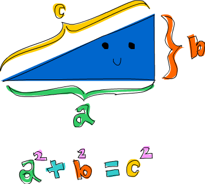

Ας ξεκινήσουμε!
Έτοιμοι? Πάμε!
 Λοιπόν, ας ξεκινήσουμε!
Αν είστε από αυτούς τους άθλοιους ανθρώπους που δεν διαβάζουν τις εισαγωγές και παραλείψατε την εισαγωγή,
διαβάστε τουλάχιστον την τελευταία ενότητα της εισαγωγής που εξηγεί
τι πρέπει να ξέρεται για αυτό το εγχειρίδιο και πώς μπορείτε να φορτώνεται συναρτήσεις.
Το πρώτο πράγμα που θα κάνουμε είναι να τρέξουμε το διαδραστικό περιβάλλον του ghc και να καλέσουμε κάποιες συναρτήσεις για να πάρουμε μια γεύση από Haskell.
Ανοίξτε το τερματικό και γράψτε
ghci. Θα δείτε κάτι σαν το παρακάτω.
Λοιπόν, ας ξεκινήσουμε!
Αν είστε από αυτούς τους άθλοιους ανθρώπους που δεν διαβάζουν τις εισαγωγές και παραλείψατε την εισαγωγή,
διαβάστε τουλάχιστον την τελευταία ενότητα της εισαγωγής που εξηγεί
τι πρέπει να ξέρεται για αυτό το εγχειρίδιο και πώς μπορείτε να φορτώνεται συναρτήσεις.
Το πρώτο πράγμα που θα κάνουμε είναι να τρέξουμε το διαδραστικό περιβάλλον του ghc και να καλέσουμε κάποιες συναρτήσεις για να πάρουμε μια γεύση από Haskell.
Ανοίξτε το τερματικό και γράψτε
ghci. Θα δείτε κάτι σαν το παρακάτω.
GHCi, version 6.8.2: http://www.haskell.org/ghc/ :? for help Loading package base ... linking ... done. Prelude>
Συγχαρητήρια, είστε στον GHCI! Η προτροπή εδώ είναι Prelude> αλλά επειδή θα γίνει πολύ μεγαλύτερο όταν φορτώνουμε πράγματα στην συνεδρία, θα χρησημιποιήσουμε απλώς ghci>. Αν θέλετε να έχετε την ίδια προτροπή, απλώς γράψτε :set prompt "ghci> ".
Ξεκινάμε με απλή αριθμητική.
ghci> 2 + 15 17 ghci> 49 * 100 4900 ghci> 1892 - 1472 420 ghci> 5 / 2 2.5 ghci>
Αυτό είναι αρκετά απλό. Μπορούμε επίσης να χρησιμοποιήσουμε πολλούς τελεστές στην ίδια γραμμη και οι σύνηθεις κανόνες προταιρεότητας ακολουθούνται. Μπορούμε να χρησιμοποιοήσουμε παρενθέσεις για να καθορίσουμε ρητά την προταιρεότητα των τελεστών, ή να την αλλάξουμε.
ghci> (50 * 100) - 4999 1 ghci> 50 * 100 - 4999 1 ghci> 50 * (100 - 4999) -244950
Ενδιαφέρον ε? Χμμμ, ξέρω δεν είναι και τόσο ενδιαφέρον, αλλά μείνεται μαζί μου! Μια παγίδα που πρέπει να προσέχεται είναι το πώς δημιουργούμε αρνητικούς αριθμούς. Αν θέλετε να δημιουργήσεται έναν αρνητικό αριθμό, είναι προτειμότερο να τον περικλείσεται σε παρενθέσεις. Ο GHCI θα γκρινιάξει με την έκφραση 5 * -3, αλλά η έκφραση 5 * (-3) θα του αρέσει.
Η αριθμητική Boolean είναι επίσης αρκετά απλή. Όπως ίσως ξέρεται, το && είναι το λογικό και, το || είναι το λογικό ή. Το not αντιστρέφει το True σε False και αντίστροφα.
ghci> True && False False ghci> True && True True ghci> False || True True ghci> not False True ghci> not (True && True) False
Ο έλεγχος για ισότητα γίνεται ως εξής.
ghci> 5 == 5 True ghci> 1 == 0 False ghci> 5 /= 5 False ghci> 5 /= 4 True ghci> "hello" == "hello" True
Τι γίνεται αν γράψουμε 5 + "llama" ή 5 == True; Λοιπόν, αν δοκιμάζουμε την πρώτη έκφραση, θα πάρουμε ένα μεγάλο τρομακτικό σφάλμα τύπων!
No instance for (Num [Char]) arising from a use of `+' at <interactive>:1:0-9 Possible fix: add an instance declaration for (Num [Char]) In the expression: 5 + "llama" In the definition of `it': it = 5 + "llama"
Ουπς! Αυτό που προσπαθεί να μας πει εδώ ο GHCI είναι ότι το "llama" δεν είναι αριθμός, άρα δεν ξέρει πως να το προσθέσει στον αριθμό 5. Ακόμα και αν δεν ήταν "llama" αλλά "four" ή "4", η Haskell πάλι δεν θα το θεωρούσε αριθμό. Ο τελεστής + απαιτεί το αριστερό και το δεξί μέρος του να είναι αριθμοί. Αν επιχειρήσουμε True == 5, ο GHCI θα μας πει ότι οι τύποι δεν ταιριάζουν. Όπως ο τελεστής + δουλεύει μόνο σε εκφράσεις που είναι αριθμοί, ο τελεστής == δουλεέυει μόνο σε πράγματα που μπορούν να συγκριθούν. Επιπλέον όμως και οι δύο πλευρές πρέπει να είναι πράγματα που έχουν τον ίδιο τύπο. Δεν μπορείς να συγκρίνεις μήλα με πορτοκάλια! Θα εξετάσουμε καλύτερα τους τύπους σε λίγο. Σημείωση: μπορείς να κάνεις 5 + 4.0 επειδή το 5 είναι ύπουλο και μπορεί να συμπεριφερθεί είτε σαν ακέραιος, είτε σαν αριθμός κινητής υποδιαστολής. Όμως ο 4.0 δεν μπορεί να συμπεριφερθεί σαν ακεραιος, άρα ο 5 είναι αυτός που πρέπει να προσαρμοστεί.
Μπορεί να μην το καταλάβατε, αλλά χρησιμοποιείτε ήδη συναρτήσεις! Για παράδειγμα, ο τελεστής * είναι μία συνάρτηση που δέχεται δύο αριθμούς και τους πολλαπλασιάζει. Όπως είδαμε, τον χρησιμοποιούμε ανάμεσα από τους δύο αριθμούς. Για τον λόγο αυτό καλούμε αυτόν τον τελεστή ένθετη συνάρτηση. Οι περισσότερες συναρτήσεις που δεν δέχονται αριθμούς είναι πρόθετες συναρτήσεις. Ας τις δούμε.
 Οι περισσότερες συναρτήσεις είναι πρόθετες, για αυτό από εδώ και πέρα δεν θα λέμε ρητά ότι μία συνάρτηση έχει πρόθετη μορφή, απλώς θα το υποθέτουμε.
Στις περισσότερες γλώσσες προγραμματισμού καλούμε μια συνμάρτηση γράφοντας το όνομα της συνάρτησης και μετά γράφουμε τα ορισματά της σε παρένθεση, συνήθως χωριζοντάς τα με κόμμα.
Στην Haskell καλούμε μια συνάρτηση γράφοντας το όνομα της συνάρτησης, κενό και μετά τα ορίσματα, χωρισμένα με κενά.
Θα ξεκινήσουμε καλώντας μια από τις πιο βαρετές συναρτήσεις της Haskell.
Οι περισσότερες συναρτήσεις είναι πρόθετες, για αυτό από εδώ και πέρα δεν θα λέμε ρητά ότι μία συνάρτηση έχει πρόθετη μορφή, απλώς θα το υποθέτουμε.
Στις περισσότερες γλώσσες προγραμματισμού καλούμε μια συνμάρτηση γράφοντας το όνομα της συνάρτησης και μετά γράφουμε τα ορισματά της σε παρένθεση, συνήθως χωριζοντάς τα με κόμμα.
Στην Haskell καλούμε μια συνάρτηση γράφοντας το όνομα της συνάρτησης, κενό και μετά τα ορίσματα, χωρισμένα με κενά.
Θα ξεκινήσουμε καλώντας μια από τις πιο βαρετές συναρτήσεις της Haskell.
ghci> succ 8 9
Η συνάρτηση succ δέχεται ο,τιδήποτε έχει επόμενο και επιστρέφει τον επομενό του. Όπως βλέπετε, απλώς χωρίζουμε το όνομα της συνάρτησης από το όρισμά της με κενό. Η κλήση μιας συνάρτησης με πολλά ορίσματα είναι εξήσου απλή. Οι συναρτήσεις min και max δέχονται δύο πράγματα που μπορούν να διαταχθούν (για παράδειγμα, δύο αριθμούς). Η συνάρτηση min επιστρέφει το μικρότερο ενώ η συνάρτηση max επιστρέφει το μεγαλύτερο. Δείτε και μόνοι σας:
ghci> min 9 10 9 ghci> min 3.4 3.2 3.2 ghci> max 100 101 101
Η εφαρμοφή συναρτήσεων (η κλήση μιας συνάρτησης βάζοντας κενό μετά το ονομά της και μετά γράφοντας τα ορίσματά της) έχει την μεγαλύτερη προτεραιότητα από τα πάντα. Αυτό για εμάς σημαίνει ότι οι δύο ακόλουθες εκφράσεις είναι ισοδύναμες.
ghci> succ 9 + max 5 4 + 1 16 ghci> (succ 9) + (max 5 4) + 1 16
Όμως, αν θέλουμε να πάρουμε τον επόμενο του γινομένου των αριθμών 9 ακι 10, δεν μπορούμε να γράψουμε succ 9 * 10 γιατί αυτό θα επιστρέψει τον επόμενο του 9 και μετά θα τον πολλαπλασιάσει με το 10. Με άλλα λόγια, θα δώσει 100. Αντίθετα, πρέπει να γράψουμε succ (9 * 10) για να πάρουμε 91.
Αν μια συνάρτηση δέχεται δύο ορίσματα, μπορούμε να την χρησιμοποιήσουμε σαν ένθετη, αν την εγκλείσουμε σε βαρείες. Για παράδειγμα, η συνάρτηση div δέχεται δύο ακεραίους και επιστρέφει την ακέραια διαίρεση αυτών. Η έκφραση div 92 10 δίνει 9. Αλλά αν γράψουμε έτσι την διαίρεση, μπορεί να υπάρξει σύγχηση ως προς το ποιός είναι ο διαιρέτης και ποιός ο διαιρετέος. Για τον λόγο αυτό, μπορούμε να την καλέσουμε σαν ένθετο τελεστή γράφοντας 92 `div` 10και ξαφνικά όλα είναι ξεκάθαρα!
Πολλοί, που έρχονται από προστακτικές γλώσσες, πιστεύουν ότι οι παρενθέσεις δηλώνουν εφαρμογή συνάρτησης. Για παράδειγμα, στην C, χρησιμοποιούμε παρενθέσεις για να καλέσουμε συναρτήσεις, όπως foo(), bar(1) ή baz(3, "haha"). Όπως είπαμε, στην Haskell για να καλέσουμε συναρτήσεις χρησιμοποιούμε κενά. Άρα οι προηγούμενες συναρτήσεις στην Haskell για είναι foo, bar 1 και baz 3 "haha". Έτσι, η έκφραση bar (bar 3), δεν σημαίνει ότι η συνάρτηση bar καλείτε με ορίσματα bar και 3. Αλλά σημαίνει ότι πρώτα καλούμε την συνάρτηση bar με όρισμα 3, παίρνουμε το αποτέλεσμα της κλήσης και μετά καλούμε την συνάρτηση bar ξανά με το αποτέλεσμα αυτό. Στην C, αυτό θα γραφόταν bar(bar(3)).
Βρεφικές συναρτήσεις
Στην προηγούμενη ενότητα πήραμε μια ιδέα του πώς καλούμε συναρτήσεις. Τώρα ας δοκιμάσουμε να ορίσουμε τις δικές μας συναρτήσεις! Ανοίξτε τον αγαπημένο σας επαιξεργαστή κειμένου και βάλτε μέσα την ακόλουθη συνάρτηση που δέχεται έναν αριθμό και τον πολλαπλασιάζει με το δύο.
doubleMe x = x + x
Οι συναρτήσεις ορίζονται με τρόπο παρόμοιο με αυτόν που καλούνται. Το όνομα της συνάρτησης ακολουθείτε από τα ορίσματά της, χωρισμένα με κενά. Αλλά όταν ορίζουμε συναρτήσεις, υπάρχει ένα = και μετά ορίζουμε τι κάνει η συνάρτηση. Σώστε αυτό σε κάποιο αρχείο, όπως baby.hs. Τώρα πηγαίντε εκεί που το σώσατε και τρέξτε ghci στο τερματικό. Όταν είστε στον GHCI, γράψτε :l baby. Τώρα που το αρχείο σας έχει φορτωθεί, μπορύμε να παίξουμε με την συνάρτηση που ορίσαμε.
ghci> :l baby [1 of 1] Compiling Main ( baby.hs, interpreted ) Ok, modules loaded: Main. ghci> doubleMe 9 18 ghci> doubleMe 8.3 16.6
Επειδή ο τελεστής + δέχεται ακεραίους αλλά και αριθμόυς κινητής υποδιαστολής (στην πραγματικότητα δέχεται ό,τιδήποτε μπορεί να θεωρηθεί αριθμός), η συνάρτηση μας επίσης δέχεται κάθε αριθμό. Ας ορίσμουμε τώρα μια συνάρηση που δέχεται δύο αριθμόυς και πολλαπλασιάζει καθέναν με το δύο και μετά τους προσθέτει.
doubleUs x y = x*2 + y*2
Απλό. Θα μπορούσαμε επίσης να την ορίσουμε ως doubleUs x y = x + x + y + y. Ας τεστάρουμε την συνάρτηση μας (για τον σκοπό αυτό προσθέστε την συνάρτηση στο αρχείο baby.hs, σώστε το αρχέιο και μετά γράψτε :l baby στον GHCI).
ghci> doubleUs 4 9 26 ghci> doubleUs 2.3 34.2 73.0 ghci> doubleUs 28 88 + doubleMe 123 478
Όπως περιμένατε, μπορείτε να καλείτε τις δικές σας συναρτήσεις από από άλλες συναρτήσεις που ορίσατε. Γνωρίζοντας αυτό, μπορούμε να ορίσουμε την συνάρτηση doubleUs ξανά, ως εξής:
doubleUs x y = doubleMe x + doubleMe y
Αυτό είναι ένα πολύ απλό παράδειγμα ενός μοτίβου που θα δείτε πολύ συχνά σητν Haskell. Ορίζουμε βασικές συναρτήσεις που είναι προφανώς σωστές και μετά τις χρησιμοποιούμε για να χτήσουμε πιο πολύπλοκες συναρτήσεις. Με τον τρόπο αυτό αποφεύγουμε την επανάλληψη. Τι θα συνέβαινε αν κάποιος μαθηματικός καταλάβαινε ότι το 2 είναι στην πραγματικότητα 3 και έπρεπε να αλλάξετε το προγραμμά σας; Θα μπορούσατε απλώς να αλλάζατε την συνάρτηση doubleMe σε x + x + x και επειδή η συνάρτηση doubleUs καλεί την doubleMe, όλα θα δούλευαν στον παράξενο κόσμο στον οποίο το 2 είναι 3.
Οι συναρτήσεις στην Haskell δεν πρέπει να είναι ορισμένες σε κάποια προκαθορισμένη σειρά, άρα είναι το ίδιο αν ορίσεις πρώτα την doubleMe και μετά την doubleUs ή ανάποδα.
Τώρα θα ορίσουμε μια συνάρτηση που πολλαπλασιάζει έναν αριθμό με το 2, αλλά μόνο αν ο αριθμός αυτός είναι μικρότερος ή ίσος με 100, αφού οι αριθμόι που είναι μεγαλύτεροι από 100 είναι ήδη αρκετά μεγάλοι!
doubleSmallNumber x = if x > 100
then x
else x*2

Εδώ εισάγουμε τον όρο if της Haskell. Ίσως ήδη γνωρίζεται τον όρο if από άλλες γλώσσες προγραμματισμού. Η διαφορά μεταξύ του όρου if στην Haskell και στις άλλες γλώσσες προγραμματισού είναι ότι το else κομμάτι είναι υποχρεωτικό στην Haskell. Στις προστακτικές γλώσσες μπορείς απλώς να παρακάμψεις κάποια βήματα αν η προϋπόθεση του όρου if δεν πληρείτε, αλλά στην Haskell κάθε έκφραση και κάθε συνάρτηση πρέπει να επιστρέψει κάτι. Θα μπορούσαμε να είχαμε γράψει τον όρο if σε μία γραμμή, αλλά προσωπικά βρήσκω αυτόν τον τρόπο γραφής πιο ευανάγνωστο. Ένα άλλο σημαντικό πράγμα για το ιf όρο της Haskell είναι ότι είναι μια έκφραση. Μια έκφραση είναι βασικά ένα κομμάτι κώδικα που επιστρέφει μια τιμή. Το 5 είναι μια έκφραση επειδή επιστρέφει 5, το 4 + 8 είναι μια έκφραση, επίσης το x + y είναι μια έκφραση επειδή επιστρέφει το άθροισμα των x και y. Αφού το else τμήμα είναι υποχρεωτικό, κάθε όρος if πάντα θα επιστρέφει κάτι και για τον λόγο αυτό είναι μια έκφραση. Αν θέλαμε να προσθέσουμε ένα σε κάθε αριθμό που παράγεται από την προηγούμενη συνάρτησή μας, θα μπορούσαμε να είχαμε ορίσει το σώμα της ως εξής:
doubleSmallNumber' x = (if x > 100 then x else x*2) + 1
Αν παραλείψουμε την παρένθεση, θα προσθέταμε ένα μόνο όταν το x δεν είναι μεγαλύτερο από 100. Προσέψτε το ' στο τέλος του ονόματος της συνάρτησης. Η απόστροφος δεν έχει κάποιο ειδικό νόημα στην σύνταξη της Haskell. Είναι ένας χαρακτύρας που μπορούμε έγκυρα να χρησιμοποιούμε σε ονόματα συναρτήσεων. Συνήθως χρησιμοποιούμε ' να ορίσουμε μια οκνηρή εκδοχή μιας συνάρτησης (μια εκδοχή που δεν είναι οκνηρή) ή μια λίγο αλλαγμένη εκδοχή μιας συνάρτησης ή μεταβλητής. Επειδή ο χαρακτήρας ' είναι ένας έγκυρος χαρακτήρας σε ονόματα συναρτήσεων, μπορείτε να ορίσετε μια συνάρτηση ως εξής:
conanO'Brien = "It's a-me, Conan O'Brien!"
Υπάρχουν δύο αξιοσημείωτα πράγματα εδώ. Το πρώτο είναι ότι στον όνομα της συνάρτησης δεν μπορούμς να χρησημοποιήσουμε κεφαλαίους χαρακτήρες για τον όνομα του Conan. Αυτό συμβαίνει επεισή τα ονόματα συναρτήσεων δεν μπορούν να ξεκινούν με κεφαλαίους χαρακτήρες. Θα δούμε αργότερα το γιατί. Το δέυτερο που αξίζει να σημειωθεί είναι ότι αυτή η συνάρτηση δεν δέχεται κανένα όρισμα. Όταν μια συνάρτηση δεν δέχεται κανένα όρισμα, λέμε ότι είναι ένας ορισμός (ή ένα όνομα). Επειδή δεν μπορούμε να αλλάξουμε την σημασία των ονομάτων (και των συναρήσεων) αφού τα ορίσουμε, το όνομα conanO'Brien και η ακολουθία χαρακτήρων "It's a-me, Conan O'Brien!" είναι ισοδύναμα.
Εισαγωγή στις λίστες
 Much like shopping lists in the real world, lists in Haskell are very useful. It's the most used data structure and it can be used in a multitude of different ways to model and solve a whole bunch of problems. Lists are SO awesome. In this section we'll look at the basics of lists, strings (which are lists) and list comprehensions.
Much like shopping lists in the real world, lists in Haskell are very useful. It's the most used data structure and it can be used in a multitude of different ways to model and solve a whole bunch of problems. Lists are SO awesome. In this section we'll look at the basics of lists, strings (which are lists) and list comprehensions.
In Haskell, lists are a homogenous data structure. It stores several elements of the same type. That means that we can have a list of integers or a list of characters but we can't have a list that has a few integers and then a few characters. And now, a list!
ghci> let lostNumbers = [4,8,15,16,23,42] ghci> lostNumbers [4,8,15,16,23,42]
As you can see, lists are denoted by square brackets and the values in the lists are separated by commas. If we tried a list like [1,2,'a',3,'b','c',4], Haskell would complain that characters (which are, by the way, denoted as a character between single quotes) are not numbers. Speaking of characters, strings are just lists of characters. "hello" is just syntactic sugar for ['h','e','l','l','o']. Because strings are lists, we can use list functions on them, which is really handy.
A common task is putting two lists together. This is done by using the ++ operator.
ghci> [1,2,3,4] ++ [9,10,11,12] [1,2,3,4,9,10,11,12] ghci> "hello" ++ " " ++ "world" "hello world" ghci> ['w','o'] ++ ['o','t'] "woot"
Watch out when repeatedly using the ++ operator on long strings. When you put together two lists (even if you append a singleton list to a list, for instance: [1,2,3] ++ [4]), internally, Haskell has to walk through the whole list on the left side of ++. That's not a problem when dealing with lists that aren't too big. But putting something at the end of a list that's fifty million entries long is going to take a while. However, putting something at the beginning of a list using the : operator (also called the cons operator) is instantaneous.
ghci> 'A':" SMALL CAT" "A SMALL CAT" ghci> 5:[1,2,3,4,5] [5,1,2,3,4,5]
Notice how : takes a number and a list of numbers or a character and a list of characters, whereas ++ takes two lists. Even if you're adding an element to the end of a list with ++, you have to surround it with square brackets so it becomes a list.
[1,2,3] is actually just syntactic sugar for 1:2:3:[]. [] is an empty list. If we prepend 3 to it, it becomes [3]. If we prepend 2 to that, it becomes [2,3], and so on.
Note: [], [[]] and[[],[],[]] are all different things. The first one is an empty list, the seconds one is a list that contains one empty list, the third one is a list that contains three empty lists.
If you want to get an element out of a list by index, use !!. The indices start at 0.
ghci> "Steve Buscemi" !! 6 'B' ghci> [9.4,33.2,96.2,11.2,23.25] !! 1 33.2
But if you try to get the sixth element from a list that only has four elements, you'll get an error so be careful!
Lists can also contain lists. They can also contain lists that contain lists that contain lists …
ghci> let b = [[1,2,3,4],[5,3,3,3],[1,2,2,3,4],[1,2,3]] ghci> b [[1,2,3,4],[5,3,3,3],[1,2,2,3,4],[1,2,3]] ghci> b ++ [[1,1,1,1]] [[1,2,3,4],[5,3,3,3],[1,2,2,3,4],[1,2,3],[1,1,1,1]] ghci> [6,6,6]:b [[6,6,6],[1,2,3,4],[5,3,3,3],[1,2,2,3,4],[1,2,3]] ghci> b !! 2 [1,2,2,3,4]
The lists within a list can be of different lengths but they can't be of different types. Just like you can't have a list that has some characters and some numbers, you can't have a list that has some lists of characters and some lists of numbers.
Lists can be compared if the stuff they contain can be compared. When using <, <=, > and >= to compare lists, they are compared in lexicographical order. First the heads are compared. If they are equal then the second elements are compared, etc.
ghci> [3,2,1] > [2,1,0] True ghci> [3,2,1] > [2,10,100] True ghci> [3,4,2] > [3,4] True ghci> [3,4,2] > [2,4] True ghci> [3,4,2] == [3,4,2] True
What else can you do with lists? Here are some basic functions that operate on lists.
head takes a list and returns its head. The head of a list is basically its first element.
ghci> head [5,4,3,2,1] 5
tail takes a list and returns its tail. In other words, it chops off a list's head.
ghci> tail [5,4,3,2,1] [4,3,2,1]
last takes a list and returns its last element.
ghci> last [5,4,3,2,1] 1
init takes a list and returns everything except its last element.
ghci> init [5,4,3,2,1] [5,4,3,2]
If we think of a list as a monster, here's what's what.

But what happens if we try to get the head of an empty list?
ghci> head [] *** Exception: Prelude.head: empty list
Oh my! It all blows up in our face! If there's no monster, it doesn't have a head. When using head, tail, last and init, be careful not to use them on empty lists. This error cannot be caught at compile time so it's always good practice to take precautions against accidentally telling Haskell to give you some elements from an empty list.
length takes a list and returns its length, obviously.
ghci> length [5,4,3,2,1] 5
null checks if a list is empty. If it is, it returns True, otherwise it returns False. Use this function instead of xs == [] (if you have a list called xs)
ghci> null [1,2,3] False ghci> null [] True
reverse reverses a list.
ghci> reverse [5,4,3,2,1] [1,2,3,4,5]
take takes number and a list. It extracts that many elements from the beginning of the list. Watch.
ghci> take 3 [5,4,3,2,1] [5,4,3] ghci> take 1 [3,9,3] [3] ghci> take 5 [1,2] [1,2] ghci> take 0 [6,6,6] []
See how if we try to take more elements than there are in the list, it just returns the list. If we try to take 0 elements, we get an empty list.
drop works in a similar way, only it drops the number of elements from the beginning of a list.
ghci> drop 3 [8,4,2,1,5,6] [1,5,6] ghci> drop 0 [1,2,3,4] [1,2,3,4] ghci> drop 100 [1,2,3,4] []
maximum takes a list of stuff that can be put in some kind of order and returns the biggest element.
minimum returns the smallest.
ghci> minimum [8,4,2,1,5,6] 1 ghci> maximum [1,9,2,3,4] 9
sum takes a list of numbers and returns their sum.
product takes a list of numbers and returns their product.
ghci> sum [5,2,1,6,3,2,5,7] 31 ghci> product [6,2,1,2] 24 ghci> product [1,2,5,6,7,9,2,0] 0
elem takes a thing and a list of things and tells us if that thing is an element of the list. It's usually called as an infix function because it's easier to read that way.
ghci> 4 `elem` [3,4,5,6] True ghci> 10 `elem` [3,4,5,6] False
Those were a few basic functions that operate on lists. We'll take a look at more list functions later
Texas ranges
 What if we want a list of all numbers between 1 and 20? Sure, we could just type them all out but obviously that's not a solution for gentlemen who demand excellence from their programming languages. Instead, we'll use ranges. Ranges are a way of making lists that are arithmetic sequences of elements that can be enumerated. Numbers can be enumerated. One, two, three, four, etc. Characters can also be enumerated. The alphabet is an enumeration of characters from A to Z. Names can't be enumerated. What comes after "John"? I don't know.
What if we want a list of all numbers between 1 and 20? Sure, we could just type them all out but obviously that's not a solution for gentlemen who demand excellence from their programming languages. Instead, we'll use ranges. Ranges are a way of making lists that are arithmetic sequences of elements that can be enumerated. Numbers can be enumerated. One, two, three, four, etc. Characters can also be enumerated. The alphabet is an enumeration of characters from A to Z. Names can't be enumerated. What comes after "John"? I don't know.
To make a list containing all the natural numbers from 1 to 20, you just write [1..20]. That is the equivalent of writing [1,2,3,4,5,6,7,8,9,10,11,12,13,14,15,16,17,18,19,20] and there's no difference between writing one or the other except that writing out long enumeration sequences manually is stupid.
ghci> [1..20] [1,2,3,4,5,6,7,8,9,10,11,12,13,14,15,16,17,18,19,20] ghci> ['a'..'z'] "abcdefghijklmnopqrstuvwxyz" ghci> ['K'..'Z'] "KLMNOPQRSTUVWXYZ"
Ranges are cool because you can also specify a step. What if we want all even numbers between 1 and 20? Or every third number between 1 and 20?
ghci> [2,4..20] [2,4,6,8,10,12,14,16,18,20] ghci> [3,6..20] [3,6,9,12,15,18]
It's simply a matter of separating the first two elements with a comma and then specifying what the upper limit is. While pretty smart, ranges with steps aren't as smart as some people expect them to be. You can't do [1,2,4,8,16..100] and expect to get all the powers of 2. Firstly because you can only specify one step. And secondly because some sequences that aren't arithmetic are ambiguous if given only by a few of their first terms.
To make a list with all the numbers from 20 to 1, you can't just do [20..1], you have to do [20,19..1].
Watch out when using floating point numbers in ranges! Because they are not completely precise (by definition), their use in ranges can yield some pretty funky results.
ghci> [0.1, 0.3 .. 1] [0.1,0.3,0.5,0.7,0.8999999999999999,1.0999999999999999]
My advice is not to use them in list ranges.
You can also use ranges to make infinite lists by just not specifying an upper limit. Later we'll go into more detail on infinite lists. For now, let's examine how you would get the first 24 multiples of 13. Sure, you could do [13,26..24*13]. But there's a better way: take 24 [13,26..]. Because Haskell is lazy, it won't try to evaluate the infinite list immediately because it would never finish. It'll wait to see what you want to get out of that infinite lists. And here it sees you just want the first 24 elements and it gladly obliges.
A handful of functions that produce infinite lists:
cycle takes a list and cycles it into an infinite list. If you just try to display the result, it will go on forever so you have to slice it off somewhere.
ghci> take 10 (cycle [1,2,3]) [1,2,3,1,2,3,1,2,3,1] ghci> take 12 (cycle "LOL ") "LOL LOL LOL "
repeat takes an element and produces an infinite list of just that element. It's like cycling a list with only one element.
ghci> take 10 (repeat 5) [5,5,5,5,5,5,5,5,5,5]
Although it's simpler to just use the replicate function if you want some number of the same element in a list. replicate 3 10 returns [10,10,10].
I'm a list comprehension
 If you've ever taken a course in mathematics, you've probably run into set comprehensions. They're normally used for building more specific sets out of general sets. A basic comprehension for a set that contains the first ten even natural numbers is
If you've ever taken a course in mathematics, you've probably run into set comprehensions. They're normally used for building more specific sets out of general sets. A basic comprehension for a set that contains the first ten even natural numbers is  . The part before the pipe is called the output function, x is the variable, N is the input set and x <= 10 is the predicate. That means that the set contains the doubles of all natural numbers that satisfy the predicate.
. The part before the pipe is called the output function, x is the variable, N is the input set and x <= 10 is the predicate. That means that the set contains the doubles of all natural numbers that satisfy the predicate.
If we wanted to write that in Haskell, we could do something like take 10 [2,4..]. But what if we didn't want doubles of the first 10 natural numbers but some kind of more complex function applied on them? We could use a list comprehension for that. List comprehensions are very similar to set comprehensions. We'll stick to getting the first 10 even numbers for now. The list comprehension we could use is [x*2 | x <- [1..10]]. x is drawn from [1..10] and for every element in [1..10] (which we have bound to x), we get that element, only doubled. Here's that comprehension in action.
ghci> [x*2 | x <- [1..10]] [2,4,6,8,10,12,14,16,18,20]
As you can see, we get the desired results. Now let's add a condition (or a predicate) to that comprehension. Predicates go after the binding parts and are separated from them by a comma. Let's say we want only the elements which, doubled, are greater than or equal to 12.
ghci> [x*2 | x <- [1..10], x*2 >= 12] [12,14,16,18,20]
Cool, it works. How about if we wanted all numbers from 50 to 100 whose remainder when divided with the number 7 is 3? Easy.
ghci> [ x | x <- [50..100], x `mod` 7 == 3] [52,59,66,73,80,87,94]
Success! Note that weeding out lists by predicates is also called filtering. We took a list of numbers and we filtered them by the predicate. Now for another example. Let's say we want a comprehension that replaces each odd number greater than 10 with "BANG!" and each odd number that's less than 10 with "BOOM!". If a number isn't odd, we throw it out of our list. For convenience, we'll put that comprehension inside a function so we can easily reuse it.
boomBangs xs = [ if x < 10 then "BOOM!" else "BANG!" | x <- xs, odd x]
The last part of the comprehension is the predicate. The function odd returns True on an odd number and False on an even one. The element is included in the list only if all the predicates evaluate to True.
ghci> boomBangs [7..13] ["BOOM!","BOOM!","BANG!","BANG!"]
We can include several predicates. If we wanted all numbers from 10 to 20 that are not 13, 15 or 19, we'd do:
ghci> [ x | x <- [10..20], x /= 13, x /= 15, x /= 19] [10,11,12,14,16,17,18,20]
Not only can we have multiple predicates in list comprehensions (an element must satisfy all the predicates to be included in the resulting list), we can also draw from several lists. When drawing from several lists, comprehensions produce all combinations of the given lists and then join them by the output function we supply. A list produced by a comprehension that draws from two lists of length 4 will have a length of 16, provided we don't filter them. If we have two lists, [2,5,10] and [8,10,11] and we want to get the products of all the possible combinations between numbers in those lists, here's what we'd do.
ghci> [ x*y | x <- [2,5,10], y <- [8,10,11]] [16,20,22,40,50,55,80,100,110]
As expected, the length of the new list is 9. What if we wanted all possible products that are more than 50?
ghci> [ x*y | x <- [2,5,10], y <- [8,10,11], x*y > 50] [55,80,100,110]
How about a list comprehension that combines a list of adjectives and a list of nouns … for epic hilarity.
ghci> let nouns = ["hobo","frog","pope"] ghci> let adjectives = ["lazy","grouchy","scheming"] ghci> [adjective ++ " " ++ noun | adjective <- adjectives, noun <- nouns] ["lazy hobo","lazy frog","lazy pope","grouchy hobo","grouchy frog", "grouchy pope","scheming hobo","scheming frog","scheming pope"]
I know! Let's write our own version of length! We'll call it length'.
length' xs = sum [1 | _ <- xs]
_ means that we don't care what we'll draw from the list anyway so instead of writing a variable name that we'll never use, we just write _. This function replaces every element of a list with 1 and then sums that up. This means that the resulting sum will be the length of our list.
Just a friendly reminder: because strings are lists, we can use list comprehensions to process and produce strings. Here's a function that takes a string and removes everything except uppercase letters from it.
removeNonUppercase st = [ c | c <- st, c `elem` ['A'..'Z']]
Testing it out:
ghci> removeNonUppercase "Hahaha! Ahahaha!" "HA" ghci> removeNonUppercase "IdontLIKEFROGS" "ILIKEFROGS"
The predicate here does all the work. It says that the character will be included in the new list only if it's an element of the list ['A'..'Z']. Nested list comprehensions are also possible if you're operating on lists that contain lists. A list contains several lists of numbers. Let's remove all odd numbers without flattening the list.
ghci> let xxs = [[1,3,5,2,3,1,2,4,5],[1,2,3,4,5,6,7,8,9],[1,2,4,2,1,6,3,1,3,2,3,6]] ghci> [ [ x | x <- xs, even x ] | xs <- xxs] [[2,2,4],[2,4,6,8],[2,4,2,6,2,6]]
You can write list comprehensions across several lines. So if you're not in GHCI, it's better to split longer list comprehensions across multiple lines, especially if they're nested.
Tuples

In some ways, tuples are like lists — they are a way to store several values into a single value. However, there are a few fundamental differences. A list of numbers is a list of numbers. That's its type and it doesn't matter if it has only one number in it or an infinite amount of numbers. Tuples, however, are used when you know exactly how many values you want to combine and its type depends on how many components it has and the types of the components. They are denoted with parentheses and their components are separated by commas.
Another key difference is that they don't have to be homogenous. Unlike a list, a tuple can contain a combination of several types.
Think about how we'd represent a two-dimensional vector in Haskell. One way would be to use a list. That would kind of work. So what if we wanted to put a couple of vectors in a list to represent points of a shape on a two-dimensional plane? We could do something like [[1,2],[8,11],[4,5]]. The problem with that method is that we could also do stuff like [[1,2],[8,11,5],[4,5]], which Haskell has no problem with since it's still a list of lists with numbers but it kind of doesn't make sense. But a tuple of size two (also called a pair) is its own type, which means that a list can't have a couple of pairs in it and then a triple (a tuple of size three), so let's use that instead. Instead of surrounding the vectors with square brackets, we use parentheses: [(1,2),(8,11),(4,5)]. What if we tried to make a shape like [(1,2),(8,11,5),(4,5)]? Well, we'd get this error:
Couldn't match expected type `(t, t1)' against inferred type `(t2, t3, t4)' In the expression: (8, 11, 5) In the expression: [(1, 2), (8, 11, 5), (4, 5)] In the definition of `it': it = [(1, 2), (8, 11, 5), (4, 5)]
It's telling us that we tried to use a pair and a triple in the same list, which is not supposed to happen. You also couldn't make a list like [(1,2),("One",2)] because the first element of the list is a pair of numbers and the second element is a pair consisting of a string and a number. Tuples can also be used to represent a wide variety of data. For instance, if we wanted to represent someone's name and age in Haskell, we could use a triple: ("Christopher", "Walken", 55). As seen in this example, tuples can also contain lists.
Use tuples when you know in advance how many components some piece of data should have. Tuples are much more rigid because each different size of tuple is its own type, so you can't write a general function to append an element to a tuple — you'd have to write a function for appending to a pair, one function for appending to a triple, one function for appending to a 4-tuple, etc.
While there are singleton lists, there's no such thing as a singleton tuple. It doesn't really make much sense when you think about it. A singleton tuple would just be the value it contains and as such would have no benefit to us.
Like lists, tuples can be compared with each other if their components can be compared. Only you can't compare two tuples of different sizes, whereas you can compare two lists of different sizes. Two useful functions that operate on pairs:
fst takes a pair and returns its first component.
ghci> fst (8,11)
8
ghci> fst ("Wow", False)
"Wow"
snd takes a pair and returns its second component. Surprise!
ghci> snd (8,11)
11
ghci> snd ("Wow", False)
False
A cool function that produces a list of pairs: zip. It takes two lists and then zips them together into one list by joining the matching elements into pairs. It's a really simple function but it has loads of uses. It's especially useful for when you want to combine two lists in a way or traverse two lists simultaneously. Here's a demonstration.
ghci> zip [1,2,3,4,5] [5,5,5,5,5] [(1,5),(2,5),(3,5),(4,5),(5,5)] ghci> zip [1 .. 5] ["one", "two", "three", "four", "five"] [(1,"one"),(2,"two"),(3,"three"),(4,"four"),(5,"five")]
It pairs up the elements and produces a new list. The first element goes with the first, the second with the second, etc. Notice that because pairs can have different types in them, zip can take two lists that contain different types and zip them up. What happens if the lengths of the lists don't match?
ghci> zip [5,3,2,6,2,7,2,5,4,6,6] ["im","a","turtle"] [(5,"im"),(3,"a"),(2,"turtle")]
The longer list simply gets cut off to match the length of the shorter one. Because Haskell is lazy, we can zip finite lists with infinite lists:
ghci> zip [1..] ["apple", "orange", "cherry", "mango"] [(1,"apple"),(2,"orange"),(3,"cherry"),(4,"mango")]
Here's a problem that combines tuples and list comprehensions: which right triangle that has integers for all sides and all sides equal to or smaller than 10 has a perimeter of 24? First, let's try generating all triangles with sides equal to or smaller than 10:
ghci> let triangles = [ (a,b,c) | c <- [1..10], b <- [1..10], a <- [1..10] ]
We're just drawing from three lists and our output function is combining them into a triple. If you evaluate that by typing out triangles in GHCI, you'll get a list of all possible triangles with sides under or equal to 10. Next, we'll add a condition that they all have to be right triangles. We'll also modify this function by taking into consideration that side b isn't larger than the hypothenuse and that side a isn't larger than side b.
ghci> let rightTriangles = [ (a,b,c) | c <- [1..10], b <- [1..c], a <- [1..b], a^2 + b^2 == c^2]
We're almost done. Now, we just modify the function by saying that we want the ones where the perimeter is 24.
ghci> let rightTriangles' = [ (a,b,c) | c <- [1..10], b <- [1..c], a <- [1..b], a^2 + b^2 == c^2, a+b+c == 24] ghci> rightTriangles' [(6,8,10)]
And there's our answer! This is a common pattern in functional programming. You take a starting set of solutions and then you apply transformations to those solutions and filter them until you get the right ones.